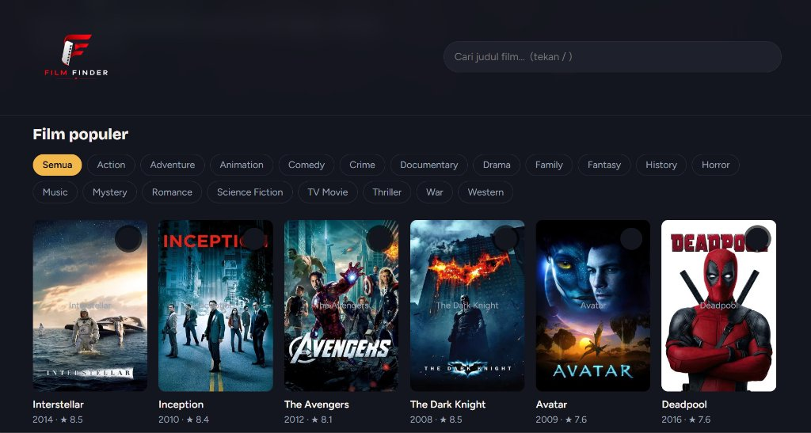

Machine Learning & Web
2026
Film Finder
Content-Based Movie Recommendation Engine
A movie discovery web application that recommends films based on shared genres, plot summaries, and semantic similarity. Built with TF-IDF vectorization, cosine similarity ranking, TMDB API data integration, and deployed live on Vercel.
PythonFlaskPandasTMDB APIVercel